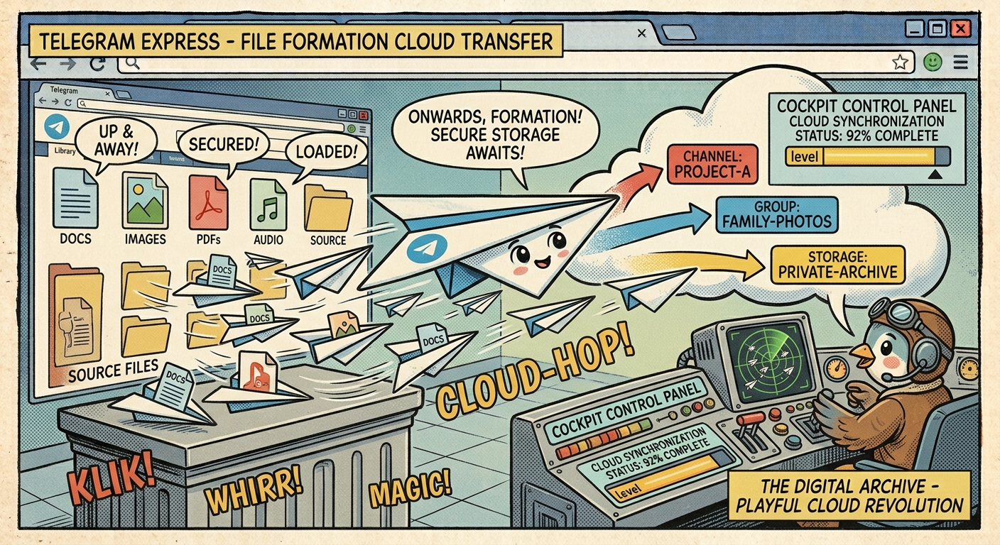

← Torna ai progettiTGM Drive NXT
Trasforma uno o più canali Telegram privati nel tuo cloud personale. Upload fino a 2 GB, multi-canale, tag, drag & drop — tutto con un'interfaccia desktop nativa in PyQt6.
✨ Core Features
- ⬆ Upload & ⬇ Download — Barra di progresso e velocità in tempo reale (MB/s)
- Drag & Drop — Trascina file dal filesystem per upload, dalla tabella cloud per download
- Esploratore locale integrato — QFileSystemModel con navigazione ad albero
- Lista file cloud — Ricerca, filtri, colonne ordinabili, preview file testuali
📡 Gestione Multi-Canale
- Multi-canale — Gestisci più canali Telegram come spazi cloud separati
- ⭐ Canali Preferiti — Barra rapida in alto per passare da un canale all'altro
- 📋 Copia / 📦 Sposta — File tra canali con operazioni in due fasi (download → upload)
- Filtro canale — Visualizza file di un canale specifico o di tutti
🏷️ Sistema di Tag
Assegna un tag a ciascun file durante l'upload o successivamente. Filtra per tag su tutti i canali contemporaneamente con chip cliccabili sotto la tabella cloud. Crea, rinomina, elimina e riordina i tag dalle Impostazioni.
📦 Coda di Trasferimento
Coda asincrona gestita da TransferManager con finestra dedicata che mostra progresso, velocità MB/s, file completati/errore. Auto-clear dei completati, badge colorati: blu (upload), ambra (download), verde (completato), rosso (errore).
🛡️ Resilienza
- Catena Copy/Move persistente — Stato salvato in SQLite; se l'app crasha, al riavvio i file temporanei vengono puliti
- Event-driven client Telegram — Loop asyncio con asyncio.Event invece di polling → latenza zero, CPU idle ~0%
🎨 Interfaccia Utente
- Tema Dark/Light/System selezionabile
- Dimensione font regolabile (8-24 pt)
- Wizard di primo avvio — 5 passi guidati in 2 minuti
- Notifiche di sistema — Popup + beep al completamento trasferimenti
- Scorciatoie — F5 per aggiornare, Delete per eliminare
- Checkbox di selezione multipla per azioni batch
🏗️ Tecnologia
- Autenticazione MTProto via Telethon (account utente, non bot)
- Thread dedicato — Client Telegram in QThread separato con event loop asyncio → GUI sempre reattiva
- Database SQLite locale per metadati, ricerca rapida e browsing offline
- Sessione persistente — Il file .session evita di reinserire credenziali a ogni avvio
🧪 Test Suite
426 test tutti passanti, zero flaky. 68% coverage complessivo, 100% sui moduli di logica pura (database, config, services). CI via GitHub Actions con matrix Python 3.10/3.11/3.12. Test suddivisi in unit (database, config, cloud model, transfer manager, transfer chain, tag) e UI (auth, channel, destination, settings, tag chip, transfer dialogs).
📦 CI/CD
Build automatici con GitHub Actions e PyInstaller --onefile per Linux x64, Windows x64 e macOS ARM64.
Ogni tag crea automaticamente una GitHub Release con tutti e tre i binari pronti per il download.